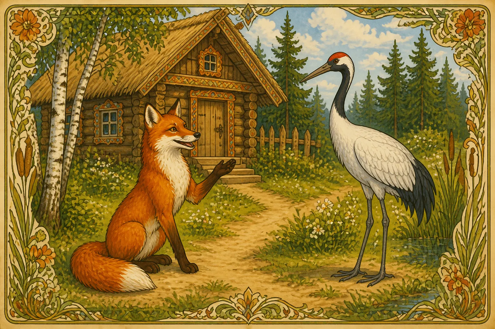
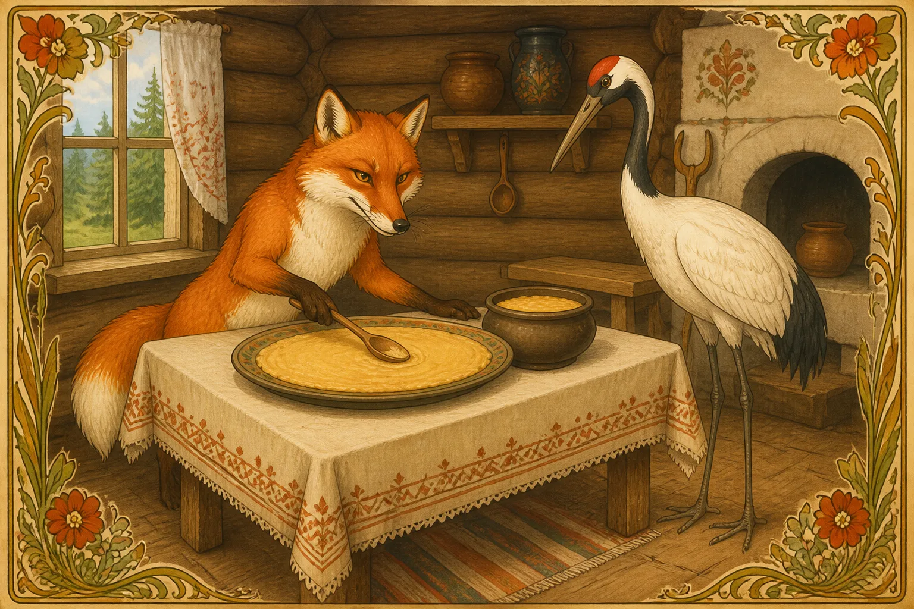
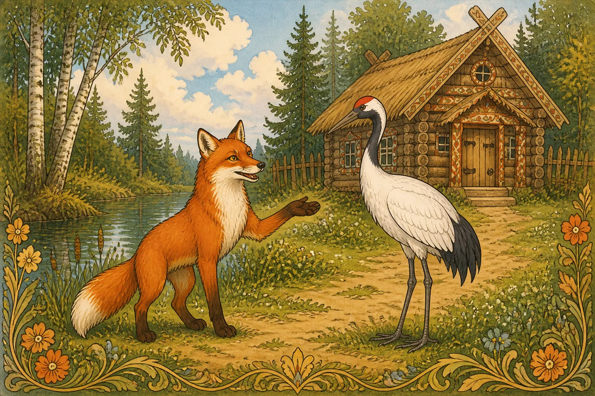
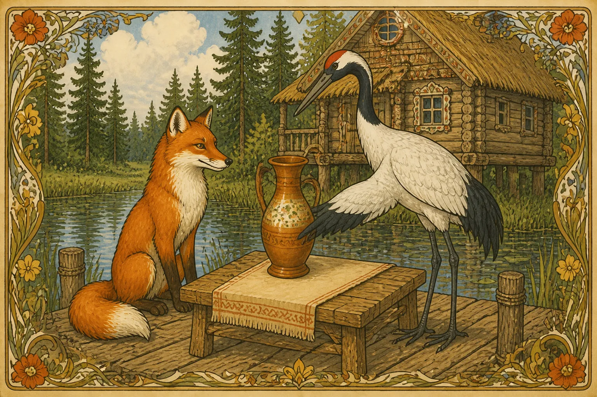
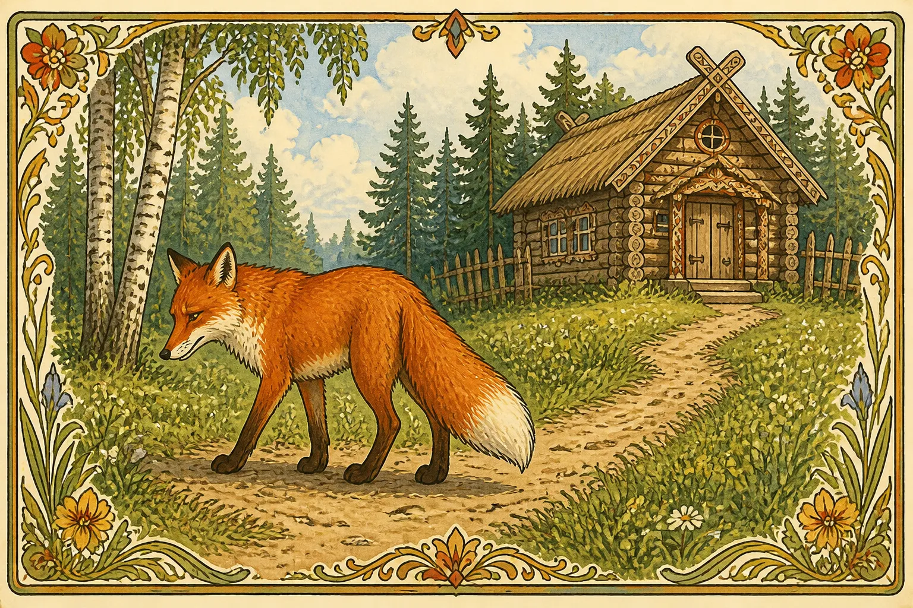

Подружилась лиса с журавлём. Звала она его к себе в гости:
— Приходи, дружок, приходи, дорогой! Уж я тебя угощу.
Пришёл журавль на званый пир. А лиса сварила каши, размазала её тонко по тарелке и поставила на стол.

— Кушай, дружок, не стесняйся. Сама стряпала.
Журавль стучал-стучал длинным клювом по тарелке, да ничего подцепить не мог. А лиса лижет себе кашу да нахваливает:
— Ах, хороша каша! Ах, сладка!
Так всю сама и съела.
— Не сердись, дружок, — говорит лиса. — Больше угощать нечем.
— Спасибо и на этом, — ответил журавль. — Приходи теперь ко мне в гости.

На другой день пришла лиса к журавлю. Журавль приготовил окрошку, налил её в высокий кувшин с узким горлышком и поставил перед гостьей.

— Кушай, кумушка. Чем богат, тем и рад.
Лиса и так к кувшину, и этак: лапой его обходит, мордочку суёт, хвостом вертит — ничего достать не может. А журавль клюёт себе из кувшина, клюёт, пока всё не съел.
— Ну, не сердись, больше угощать нечем.
Пошла лиса домой ни с чем. Думала наесться на неделю, а осталась голодной. С той поры и дружба у лисы с журавлём врозь: как аукнулось, так и откликнулось.
